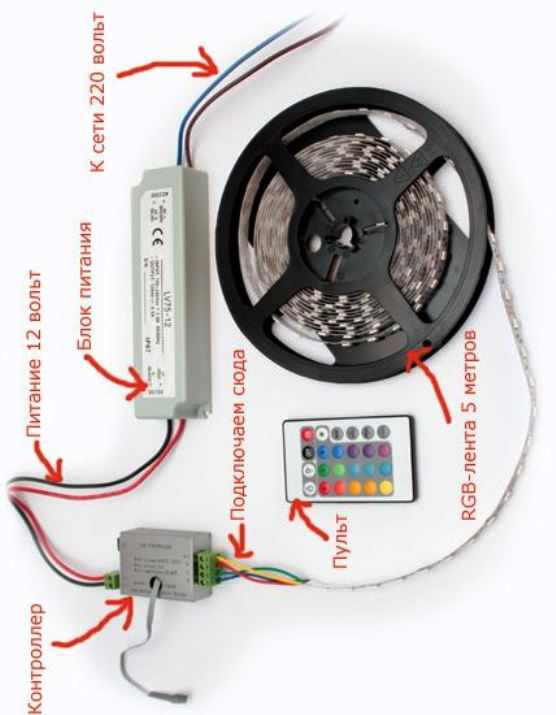
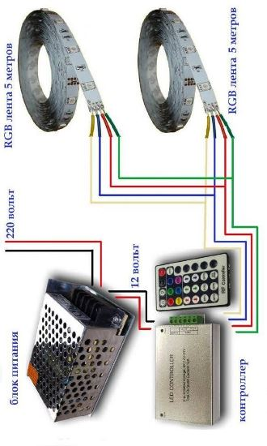

Качественный электромонтаж в Санкт-Петербурге и ленобласти, стаж 12 лет. Частный электрик, недорого и качественно.
Тел. 8 904 642 08 57 Николай.

Подключение светодиодной ленты.
Сегодня большой популярностью при создании интерьеров пользуется организация освещения помещений с помощью светодиодной ленты - совершенно нового продукта на светотехническом рынке. Это оригинальная осветительная система, которая обладает уникальными возможностями в выборе цветового решения, а также длительным сроком службы. Она проста и удобна в процессе монтажа и демонтажа, имеет низкие показатели энергопотребления.
Сколько стоит подключить светодиодную ленту.
Цена работы от 3000 руб.
Подключение светодиодной ленты - процесс не сложный, но хлопотный для самостоятельного осуществления.
Особенно, если не обладать специальными навыками и знаниями. Можно допустить ряд простых ошибок, которые, тем не менее, скажутся и на функциональности светодиодного устройства, и на его долговечности. Кроме того, необходимо соблюдать все правила техники безопасности, от которых потом напрямую будет зависеть безопасность эксплуатации всей осветительной системы в помещении.
Мастер по светодиодным лентам.
Опытный высококвалифицированный мастер-электрик выполнит монтаж светодиодной ленты с учетом всех дизайнерских особенностей по организации освещения в будущем интерьере. Делаю все качественно, в кратчайшие сроки и по весьма привлекательным для потенциальных клиентов расценкам.
Если вы хотите, чтобы светодиодная лента функционировала в вашей городской квартире или частном загородном доме долго и совершенно безопасно, необходимо при ее монтаже правильно выполнять некоторые специфические вещи.
Доверяйте подключение опытному мастеру.
Соблюдать полярность, знать правильные способы подключения, чтобы электрическая нагрузка распределялась по всем участкам системы равномерно, правильно выбрать блок питания и многое другое. А это под силу только профессиональному электрику, имеющему, к тому же, опыт работы с подобного рода осветительными устройствами.
Поэтому, если возникла потребность в подключении светодиодной ленты, обращайтесь! Все будет выполнено быстро, с гарантией, с учетом интерьерных особенностей и пожеланий заказчика.
Быстро и совсем недорого! А главное - абсолютно безопасно в процессе дальнейшей эксплуатации для вас и ваших близких!



Сколько будут стоить материалы.
Расценки на электропроводку.
Электромонтаж в доме.
Замена электропроводки в двухкомнатной квартире?.
Сколько стоит сделать внутреннюю проводку?.
Установка люстр и светильников.
Электромонтаж проводов в бане.